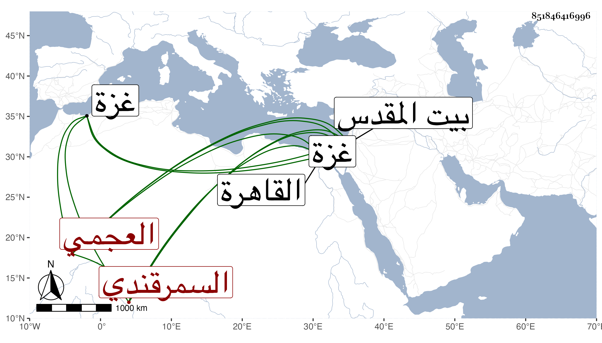

0902Sakhawi.DawLamic.ITO20230111-ara1.EIS1600.851846416996
Biography ID: 851846416996
821
مبارك شاه السمرقندي العجمي والد كيلان الماضي قاصد شاه رخ بن تمرلنك إلى الظاهر جقمق ، بغته الأجل بغزة قبل وصوله القاهرة في ربيع الآخر سنة أربع وأربعين وهو كهل ثم جيء بعد بولده وهو ميت ونقل هذا معه إلى بيت المقدس فدفنا به كما تقدم في كيلان ويقال أنه كان عاقلا سيوسا ذا تؤدة وحسن سمت وله طلب وأدب . رحمه الله . ذكره المقريزي باختصار عن هذا .
